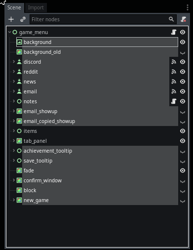
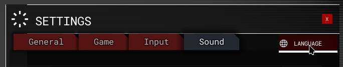
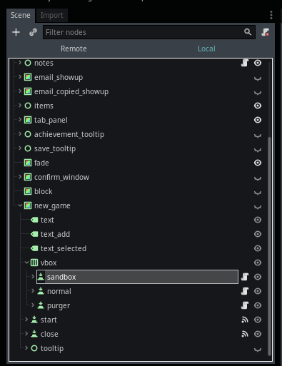

Module: game_menu
Documentation last edited: October 22, 2025 at 10:46 UTC
Description
Like any other documentation page, this one will start with a story... So... This game didn't have a game menu for a long time... Honestly I didn't work that much with UI and it was rather frightening to make one. Either way, I decided to face the fear and actually make this game menu. I don't remember if it was my first work on UI, but if you take a look into source code and fucking tell that this is my first attempt into UI. It's a mess. It's horrible. I hate it. I want to refactor it. For some reason I still didn't do that. Maybe because I still don't give a shit about a game menu? Oh yeah sure... I can whine here as much as I'd like, but either way I write that page to be somewhat useful for you, dear reader. Mainly, this page is about telling you how to survive in that horrible mess I call a "game menu". Looks fancy outside, but don't you dare to look inside...
Any future of "the script" are referring to
"res://modules/game_menu/src/ui/main_control.gd"
General Implementation

Do not repeat at home
This game menu implementation is using a famous UI development pattern that is also known as "Clusterfuck of nodes". Just nodes. Nodes. Nodes... Layers after layers...
"res://modules/game_menu/src/ui/main_control.gd"
is practically just having a bunch of functions that are called by signals connected in editor while editing the scene
"res://modules/game_menu/assets/ui_scene/game_menu.tscn"
It quite literally is just a clusterfuck of nodes. If you know how to work with
Control
derived nodes and Godot UI in general, you can already do something with this game menu. However... There might be some things to point out anyway, just for ease of future editing.
Small Nodes
There's a bunch of "small" nodes that deserve their own section here. They are called "small" due to their very simplistic functionality, like, there's nothing complex at all.

The following nodes I treat as "small", "simple" ones. Yes. Exactly like that. You can have your own opinion regarding this. Why wouldn't you have a different opinion about small things anyway?
Nodes
"background"
- A simple texture rect for background of the main menu. It's basically just vignette with video degradation effect.
"background_old"
- An older implementation of background. Due to introduction of "Gamma Correction", I decided to "temporarily" replace it with
"background"
and as you can understand, that's one of those cases when temporary solution turned out to be permanent.
"discord"
- A button that opens a Discord invite link to join "Index Project" Discord server.
"reddit"
- A button that opens a Reddit page that Bender has made for lulz.
"news"
- A button that opens a patch notes news page in game menu.
"email"
- A button that copies an email of Index Project into clipboard.
"notes"
- Notes by Bender himself, yeah, these are optional and can be enabled in settings of game menu. Keep in mind that "notes UI" is only made for this game menu.
"email_showup"
- A showup panel that shows when a mouse cursor is hovering over
"email"
button, shows Index Project email.
"email_copied_showup"
- A showup panel that shows up when an
"email"
button is clicked, it says
"Copied!"
"achievement_tooltip"
and
"save_tooltip"
- These are just tooltips for the corresponding menus.
"fade"
- A simple
ColorRect
to fade the menu in/out.
"confirm_window"
- A simple confirmation window that you can call by using a
show_confirm_window
method.
"block"
- A simple
ColorRect
node with a fully transparent color. It blocks any mouse inputs. It is used by fading of the game menu to prevent usage of buttons. If it fades into black, it makes it impossible to click any buttons.
"items"
It's not like items, but... buttons... Look, I'm confused here too, alright?

Yeah, definitely buttons. So, there's no special magical logic regarding these buttons here, you just connect a signal to
"main_control"
script and then you do whatever you want. Yeah. You just slap one more function into this fuck pile. Yeah. Absolutely.
"tab_panel"

"tab_panel" is a universal solution. That already should sound pretty shitty to you. Either way, "tab_panel" serves as a way to show some kind of content in a window. For the time being, it is used for the following "panels":
- Settings
- Credits
- Achievements
- Game save loading
- OST player
- Languages selection
- Patch notes news
Every single one of those might need their own section to be described better when it comes to their general implementation.
Panel: Settings
This is the biggest clusterfuck in this whole mess. This is the reason
"main_control"
script is THAT huge. Settings. I love them, really, they give a possibility to cut the crap and make it run on potatos. It's a sweet option. Their implementation sucks ass, though, and you will have to deal with it. In this section, it is worth mentioning that:
- All that crap also just uses connection of signals to
"main_control"
making the entire disaster even worse, but hey, I hope you love Italian food.
- Ignore the line above, turns out it doesn't use it here and I'll keep the line above just because I love references to Italian food.
- That thing still turns the code of
"main_control"
into mess anyway, but it makes you feel the pain in a different, more sophisticated way.
The only reason you'd be *so interested* in this section is because you'd want to add a setting yourself. Firstly, think about it: Do you really want to add a setting? Really? Like, those settings that this game already has, isn't that *enough*? Are you sure?
Are you sure twice?
I beg you, it's not a good idea to actually add a setting in this game. Please. Don't. This didn't stop you? What kind of person you are...
How to add your own setting into this fuck pile
Find a node with an option value selection that fits your needs. If one exists - it's good, you can practically keep copy-pasting shit I've wrote already. If not - it's your problem now, you will write the rest all by yourself regretting your choices.

Then you just duplicate the node, rename some things in it, etc. After that go to
"main_control"
and do Ctrl + F, find the source code of the thing you duplicated before, use its name as a keyword to find out the crappy source code I wrote.
Starting from this point, you just copy-paste the code, change some of the names to your values and ta-da, you have your own option. Please, be aware to change the function name in
options.connect("item_selected", self, "fps_counter_item_selected")
to the name of your own function. Otherwise it might not work correctly.
get_game_option_text
and
get_graphics_option_text
methods are useful to get text value of selected settings in the corresponding settings panel. Other than that, you better look at the source code of other settings just to see what they did, cases are somewhat individual. I'd highly recommend to keep your setting values in
Values
just string values, these are the simplest to work with.
Panel: Settings - Graphics
Graphics settings are affecting visual effects that affect GPU and *may* affect CPU as well. Some of the things these settings do aren't solely "graphical" I'd say, but since a lot of players preferred to use a graphics menu only - it is now doing more than it was designed to. Sounds like a classic story, older than anyone reading this thing.
List of graphics settings
"Preset"
- Changes preset to change a set of settings to a given quality group. Affects
"bloom_enabled", "motion_blur", "anti_aliasing_quality", "fxaa_enabled", "sun_shadow_quality", "sun_shadow_resolution", "shadow_filter_quality", "light_shadow_quality", "depth_quality", "particle_quality", "overall_detailing", "material_quality", "post_processing_quality", "character_quality", "geometry_quality", "props_amount", "water_quality", "viewmodel_hands_quality", "decal_quality", "lighting_quality", "auto_exposure", "physics_quality", "debris_amount", "NPC_amount"
values.
"Resolution"
- Changes the game's resolution. Affects
"window_resolution"
value.
"Fullscreen"
- Changes the fullscreen mode. Fun fact: You can also use Alt + Enter for this. It isn't, like, the "real" fullscreen mode, more like so-called "windowed fullscreen mode". Affects
"window_fullscreen"
value.
"V-Sync"
- Vertical Synchronization, it says it all. Affects
"vsync_enabled"
value.
"Display"
- Chooses which display to use for this game. Even if it is visible, it is supposed to be useful for multidisplay setups. Affects
"display"
value.
"Field Of View"
- Regulates the player's field of view. Only regulates the camera's FOV, viewmodels are left untouched because I'm not going to tweak animations to make sure they aren't looking weird on high FOVs. Affects
"FOV"
value.
"FPS Limit"
- FPS limiter value. Maximum of the frames that can be rendered per second. Affects
"max_fps"
value.
"FPS Counter"
- Shows a simple FPS counter on top-right. Affects
"display_debug_fps"
value.
"Debug Info"
- Debug information regarding performance... Look, I'm not sure why players would need it, but this is MY game and it was surely useful for me. Affects
"display_debug_info"
value.
"Bloom"
- Toggles bloom post-processing effect. Affects
"bloom_enabled"
value.
"Anti-Aliasing"
- Changes anti-aliasing quality or outright disables it. Affects
"anti_aliasing_quality"
value.
"FXAA"
- Fast Approximate Anti-Aliasing. Turns your game into a blurry mess in attempt to do anti-aliasing. Much faster than MSAA, though, so it makes sense to have it in settings. Having this option enabled doesn't mean that it'll make your game any better. Seriously. Just a blurry mess. A glorified blurry mess. Affects
"fxaa_enabled"
value.
"Color Grading"
- LUT Color Grading effect. Changes colors. You know, in a cinamatic manner. Especially when it is configured right... Either way, affects
"color_grading"
value.
"Gamma"
- Changes gamma. It's like... brightness... with extra steps... Man, can't you just use the damn setting to see it yourself? It just affects
"gamma_value"
, that's all you have to know.
"Brightness"
- Changes brightness of the entire game's view. Affects
"gamma_brightness"
value.
"Contrast"
- Changes contrast of the entire game's view. Affects
"gamma_contrast"
value.
"Saturation"
- Changes saturation of the entire game's view. Affects
"gamma_saturation"
value.
"Sharpen"
- Changes sharpness of the entire game's view image. Affects
"gamma_sharpen"
value.
"Texture Quality - Locations"
- Changes texture quality of all location textures. Affects
"location_texture_quality"
value.
"Texture Quality - Characters"
- Changes texture quality of all characters. Affects
"character_texture_quality"
value.
"Texture Quality - Viewmodels"
- Changes texture quality of all viewmodels. Affects
"viewmodel_texture_quality"
value.
"Sun Shadow Quality"
- Changes the quality of directional light's shadows. Affects
"sun_shadow_quality"
value.
"Sun Shadow Resolution"
- Changes the resolution of directional light's shadows. Affects
"sun_shadow_resolution"
value.
"Shadow Filter Quality"
- Changes the shadow filter quality for all shadowmaps. Affects
"shadow_filter_quality"
value.
"Light Shadow Quality"
- Changes the shadow quality of all shadowmaps. This one seems to work weirdly, though. Affects
"light_shadow_quality"
value.
"Depth Quality"
- TURN YOUR GAME INTO CRUELTY SQUAD. TEAR A HOLE IN THE DEPTH QUALITY. FUCK THE DEPTH QUALITY. Affects
"depth_quality"
value.
"Geometry Quality"
- Affects the distance of appearance of LOD variants of the models. Affects
"geometry_quality"
setting.
"Depth Prepass"
- Toggles depth prepass... Well I'm not quite sure if it is even needed as a setting, but let it be here. Affects
"depth_prepass"
value.
"Overall Detailing"
- This one. This one isn't just a setting. It's a whole fucking replacement of that mess I had in a game settings. A whole damn clusterfuck of settings to change here. All of them are *basically* related to wasteful settings that can harm CPU/GPU performance severely, depending on your hardware. Affects
"overall_detailing"
setting that is affecting
"human_shooting_light", "human_footsteps", "human_battle_phrases", "human_smooth_shoot_sound", "left_hand_animation", "in_sight_animation", "viewmodel_close_surface_check", "bullet_trails", "bullet_trail_light", "env_reverb", "soundscape_random_sounds", "bullet_process_water", "bullet_process_glass", "bullet_shoot_event", "player_camera_walk_anim", "player_camera_suppression_anim", "player_camera_explosion_anim", "player_low_health_anim", "player_camera_damage_anim", "viewmodel_casings", "viewmodel_fire_light"
values.
"Particle Quality"
- Quality of the particles, usually being a fucked up reason of GPU overdrawing that leads to even fucking worse performance. Oh yes, I know, I know about the particles being trash in performance, you easily fix that by removing them entirely. Affects
"particle_quality"
value.
"Material Quality"
- A setting that fucks up material real good. They were PBR, right? With all the fancy shit? So it basically strips down the PBR and turns it into diffuse-only materials. Fucking beautiful. It cuts down for about 30-40% of OpenGL operations. Saves your GPU. Affects
"material_quality"
value.
"Post-Processing Quality"
- Strips down post-processing effects by using their hand-written low-quality shitty version of them. Saves some shader processing, but for what reason? Don't your iGPU like reading an already existing mipmap with blurred variations of the screen? Oh, actually, it doesn't like it. Affects
"post_processing_quality"
value.
"Character Quality"
- Affects apperance of LOD version of
HumanModel
if one exists for a model. On low it shows LOD variation all the time. Affects
"character_quality"
value.
"Props Amount"
- Cuts down all the fancy shit from locations in form of any location meshes (
LocationProp, LocationBlockoutMesh, LocationMeshCombiner
) to make your crap run faster. Behavior of such meshes are manually configured. It's not even only about visual stuff, it also helps to cut down the physics too. Is it cruel?
Yes.
Is it working?
For fucking sure.
Affects
"props_amount"
value.
"Water Quality"
- Changes the quality of the water shader. Affects
"water_quality"
value.
"Viewmodel Hands Quality"
- Changes the quality of the viewmodel hands if one exists for the current set of viewmodel hands. Affects
"viewmodel_hands_quality"
value.
"Decal Quality"
- Changes the quality of newly created decals (blood, bullet hits, etc). On high uses projected decals (which can be a bit expensive, even though accurate), on medium it creates a simple quad (fast, inaccurate), on low it doesn't create anything (very fast and fucking disappointing). Affects
"decal_quality"
value.
"Lighting Quality"
- Changes the quality of lighting. Usually affects the amount of lights, their rendering distance, etc. Affects
"lighting_quality"
value.
"Physics Quality"
- Changes the quality of physics. It's not like it's changing anything that drastically. Mostly it is used to make static bodies detection of surfaces (which requires separate set of
StaticBody
nodes) less accurate (by replacing with just one generic-typed node). Affects
"physics_quality"
value.
"Debris Amount"
- Changes the overall amount of debris. Debris is kinda impactful when it comes to physics so their amount is given to be controlled. It is possible to go beyond the limit and get your PC cooked, if you *really* want. Affects
"debris_amount"
value.
"NPC Amount"
- Controls the amount of NPCs on the location. Each NPC spawn is manually configured. On "low" it simply disables spawn of NPC spawns that are supposed to spawn on "high" settings only. Helps to drastically optimize CPU use because NPCs are unoptimized pieces of shit that I love using in huge quantities despite that. Affects
"NPC_amount"
value.
Panel: Settings - Game
Game settings earlier had a shitton of game settings to control the intensity of the CPU/GPU usage. Now a lot of those settings were moved into
"Overall Detailing"
setting to not flooding the space up in there while being easily accessible, especially given the fact many of those settings are clearly visual/visceral in their nature (related to animation, smoothing, etc).
"Game"
- A useless setting that was added as a joke from Elenakrittik. I mean. You can disable *everything* to make that game run on your potatos. It feels like disabling a game for yourself.
Fun is not included.
"Instant Usage"
- Instant usage. Yes yes yes. Exactly. Okay, if we take it a bit seriously... This setting works together with left-hand animations. If there are left-hand animations, used objects aren't really used immediately, but after 0.2 seconds timer, waiting for the animation to get to the state when hiding a weapon wouldn't make it look bad. It might make the game a bit less responsive and therefore become a reason for somebody to configure it to be disabled. Oh yes, sometimes I can think about others, surprisingly. Affects
"instant_usage"
value.
"Game Menu Notes"
- Bender's notes, but in a game menu. Disabled by default because I wouldn't let him to conquer my own game too much :) Affects
"game_menu_note"
value.
"Loading Notes"
- Bender's notes during a location loading screen. Enabled by default because loading screen notes are essential. Affects
"loading_note"
value.
"Ragdoll - Time to Disappear"
- Regulates the time of removal of ragdolls. Affects
"ragdoll_disappear_time"
value.
"Ragdoll - Limit Amount"
- Regulates the maximum amount of co-existing ragdolls. Affects
"ragdoll_limit"
value.
"Dropped Weapon Removal Time"
- Time of removal of all those dropped weapons of dead NPCs. Keep in mind, weapons dropped by the player himself last forever. Affects
"dropped_weapon_removal_time"
value.
"Ragdoll - Keep Unique"
- Instead of reusing NPC's ragdoll for optimization, this setting allows enabling the ultimate "let the bodies hit the floor" mode where ragdoll instances are truly unique. Keep in mind, this setting isn't really optimized and... I don't give a shit really. Just take it. Affects
"keep_ragdolls"
value.
"Player - Legs"
- Allows you to cut your own legs off :) Affects
"player_legs"
value.
"Player - Viewbobbing"
- Allows you to not experience motion sickness. Affects
"player_viewbobbing"
value.
"Crosshair - Visibility"
- Toggles visibility of the entire crosshair. I'm not sure how you'd be playing this game, but let's assume that you love hardcore shooters, for some reason. Affects
"crosshair_visible"
value.
"Crosshair - Hit Marker"
- Toggles hit marker of crosshair that shows up when you damage anything. Affects
"crosshair_hit_marker"
.
"Crosshair - Death Marker"
- Toggles death marker of crosshair that shows up when you kill a character. Affects
"crosshair_death_marker"
.
"Crosshair - Hit Sound"
- Toggles the hit sound that plays when you damage literally anything. It is disabled by default because it was bothering me, but somebody else found it nice to have so... Fuck it, here's that setting that affects
"crosshair_hit_sound"
value.
"Crosshair - Death Sound"
- Toggles the death sound when you kill somebody, a very bassy hit sound. Affects
"crosshair_death_sound"
value.
"Crosshair - Health Data"
- Toggles the health info HUD that was added because damage didn't really feel like damage I don't know just take it. It is enabled by default because it is cool. You can disable it if you feel like it is too much of a handholding for your buffy ass. Affects
"crosshair_health_data"
value.
Panel: Settings - Input

A panel with inputs. I mean. Yeah, it is self-explanatory, isn't it? Just mouse sensitivity, a bunch of checkboxes added for lulz, a reset button and a bunch of keybinds.
"Mouse Sensitivity"
- A slider that simply changes
"mouse_sensitivity"
value.
"Toggle Crouch"
- A setting that makes it possible to press a crouch button once to crouch until you press it again. Toggles
"toggle_crouch"
value.
"Toggle Sprint"
- A setting to press a sprint button once to sprint until you press it again. Toggles
"toggle_sprint"
value.
"Toggle Aim"
- Press an aim button once to aim until you press it again. Toggles
"toggle_aim"
value.
"Invert Mouse X"
- Inverts horizontal mouse look. Toggles
"invert_mouse_x"
value.
"Invert Mouse Y"
- Inverts vertical mouse look. Toggles
"invert_mouse_y"
value.
"Reset"
- A reset button that shows a confirmation window to later to call
reset_input_accept
method.
"Keybinds"
- This one is interesting... This one deserves a whole damn section :)
Keybinds
Keybinds are initialized in
initialize_settings
. Yes. Somewhere on the line... 1983? Either way, just search for a comment
# INPUT REMAPPING
and you'll be fine. Yes, it is a huge function. Yes I could just split it to smaller functions so I wouldn't fuck with your mind now. Yes, I don't give a shit and this won't ever be edited by me. Just use a damn
[Ctrl + F]
god dammit.

If you want to add a new keybind, you just edit the script and add your new fancy keybind into
inputs
dictionary. I know. Very extensible design. Do not whine about it.
"console_toggle" : "Developer Console"
- key is the input action name, value is the display name you can see in the menu. Simple.
Panel: Settings - Sound
Sound settings. You know what it means.
"Reset"
- Shows a confirmation window that later calls
reset_sound_accept
"Master"
- Master channel, the overall game's volume. Edits
"master_volume"
value.
"Music"
- Music channel, the music's volume. Edits
"music_volume"
value.
"Music - Battle"
- Music channel, but for the "battle" music. Edits
"music_battle_volume"
value.
"Environment"
- Environment channel, soundscapes, gunfire, etc. Edits
"env_volume"
value.
"Voicelines"
- Voicelines and voicemess. Edits
"voiceline_volume"
value.
Panel: Settings - Language


Yeah so... There was a button for a language menu in the "items" node, but then Bender started to complain about the sheer amount of those buttons in there, so I had to move it into settings. Sounds nice, right? You definitely needed to know about this. I know you do. Either way, the list of those languages is filled automatically by checking the list of files of those .json files in
"localization"
folder. One thing that you need to know is that
"__original_text.json"
is listed as "Runglish" and
"EnglishFix.json"
is listed as
"English"
in the menu. Otherwise languages are listed as their original .json filenames.
I hate how long it took me to cover all the settings :(
Achievements

An achievements menu is kinda simple. Initialization happens in
initialize_achievements_tab
, tab changes are processed in
achievement_on_tab_change
. It lists all the achievements, however, the "secret" achievements are only initialized when they are unlocked. Oh, yeah, every time you press
"Achievements"
tab button, it will update show the updated menu. So... If you had that menu opened and got an achievement unlocked only after that, this menu won't update itself. I mean yeah it can be fixed. I mean, yeah, I also don't give a shit.
OST

An OST menu. Might be a little excessive for this game, given the fact it doesn't really have that kind of revolutionary soundtrack that everybody would like to listen instead of playing this game. But you know? I don't really care because it was fun to work on. It is using quite a bunch of methods:
on_OST_position_changed, on_OST_volume_changed, on_OST_finished, OST_play, OST_pause, OST_stop, update_OST_panel, get_OST_time_text, play_OST
.
"res://modules/game_menu/assets/OST/"
contains all the soundtracks in .mp3 format. All the initialization is happening in
update_OST_panel
function. There's one thing to cover though...
.
├── 0_1_1_files.mp3
├── 0_1_1_files.mp3.import
├── 0_1_2_ReaadyGodySte.mp3
├── 0_1_2_ReaadyGodySte.mp3.import
├── 0_1_loading_v2.mp3
├── 0_1_loading_v2.mp3.import
├── 0_2_dead_or_alive.mp3
├── 0_2_dead_or_alive.mp3.import
├── 0_eternal_conflict.mp3
├── 0_eternal_conflict.mp3.import
├── 10_collapse.mp3
├── 10_collapse.mp3.import
├── 11_moments_to_death.mp3
├── 11_moments_to_death.mp3.import
├── 1_1_tutorial.mp3
├── 1_1_tutorial.mp3.import
├── 12_blood_loss.mp3
├── 12_blood_loss.mp3.import
├── 13_mall_nightmare.mp3
├── 13_mall_nightmare.mp3.import
├── 14_empty_halls.mp3
├── 14_empty_halls.mp3.import
├── 1_first_iteration.mp3
├── 1_first_iteration.mp3.import
├── 2_1_no_choice.mp3
├── 2_1_no_choice.mp3.import
├── 2_2_encrypted_session.mp3
├── 2_2_encrypted_session.mp3.import
├── 2_questionable_choices.mp3
├── 2_questionable_choices.mp3.import
├── 3_waiting.mp3
├── 3_waiting.mp3.import
├── 4_omega_security_presentation.mp3
├── 4_omega_security_presentation.mp3.import
├── 5_corporate_terrorism.mp3
├── 5_corporate_terrorism.mp3.import
├── 6_senseless_murder.mp3
├── 6_senseless_murder.mp3.import
├── 7_constant_alarm.mp3
├── 7_constant_alarm.mp3.import
├── 8_1_mad_mode.mp3
├── 8_1_mad_mode.mp3.import
├── 8_2_HCS-S_mode.mp3
├── 8_2_HCS-S_mode.mp3.import
├── 8_first_contact.mp3
├── 8_first_contact.mp3.import
├── 9_get_inn_arena.mp3
└── 9_get_inn_arena.mp3.import
You may notice those weird numbers in the beginning of file names. I use it as a weird way to sort the positioning in the playlist. I know, it's weird, but it works. Keep in mind that those numbers are ignored entirely and filename is used for the display naming in the menu. Oh wait, why does
"1_"
goes after
"10_"
?...
Credits

Credits. Just a simple
RichTextLabel
with a bunch of effects and all. It has no initialization in code and the only code written for this thing is just about switching tabs.
New Game

Start a new game yes yes yes. Alright. It might not be as easy to explain because this thing is kinda broken. Firstly, if you wonder how difficulties selection works... It's pretty simple.

Tada, now you can connect dots between 2 + 2 and add your own difficulty :)
Alright, you'd need to edit some other scripts to do that, but... It is what it is. It's not really a topic of this documentation page, so I won't cover it here, especially because I doubt that this game would need any other difficulties except those it has now.
When you start a new game - you are getting redirected to a functional location that is
"func_new_game"
. When you enter this location, a logic script located at
"res://locations/scenes/logic/func_main_menu.gd"
will be runned and then the new game starts basically. Effectively broken modern solution for an ancient problem.
I hope you had fun reading about this game menu.
General Information
Root directories list
assets, docs, src
Nodes
GameMenu
notes_switcher
achievement_icon
difficulty_hint
main_control
input_button
Classes
None
Resources
Other Scripts
None